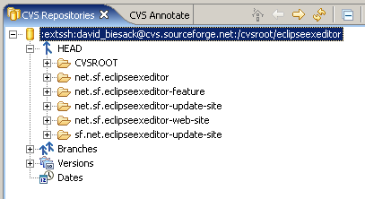
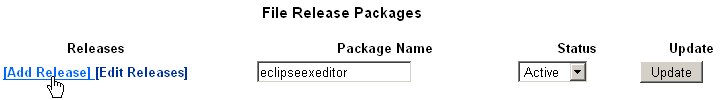

| Eclipse Corner Article |

Summary
Congratulations on taking the plunge and writing an open source plug-in for the Eclipse platform. SourceForge.net can provide a good home your plug-in, but information on how best to set up an Eclipse project there is sparse. This article is an introduction to SourceForge for the Eclipse developer. You will learn the features available to the SourceForge.net open source developer community and be guided through the process, from creating a SourceForge project to hosting your Eclipse Update site.
By David Biesack, SAS
October 15, 2005

SourceForge.net (or simply SourceForge) is the world's largest open source software repository and developer resource. Just as Eclipse is an "IDE for everything and nothing in particular", SourceForge is a developer site for everything open source and nothing in particular. Similar to how an Eclipse plug-in plugs into the Eclipse framework through extensions of well-known extension points, open source projects "plug into" the rich collaboration community hosted by SourceForge.
SourceForge is language and platform agnostic — it may be Java, .Net, Perl, Ruby, PHP, or any other software project. For each project, regardless of language or platform, a wide array of services is freely available. The project 'extension points' include server space for a project web site, your own project sub-domain, a CVS server, file release management, GNU Mailman mailing lists, project categorization, on-line discussion forums, bug tracking, secure login shell and FTP, a compile farm, task lists and even an on-line financial donation management.
There are too many services available to cover in this article, so I present one common scenario — the creation of a new project — and I introduce features as they come into play in the life cycle of developing, publishing, and supporting an open source plug-in for Eclipse.
You will see how SourceForge extends the Eclipse Plug-in Development Environment (PDE) to create what I refer to as the SourceForge Plug-in Development Environment (SFPDE). Eclipse provides the coding, testing, debugging, and packaging aspects of Plug-in development. The SFPDE adds the source management, distribution, collaboration, discovery, web hosting, and support capabilities. The combined SFPDE services offer a comprehensive environment for Eclipse plug-ins development.
I will use a humble plug-in that I wrote and released on SourceForge as an example (the Eclipse Text Editor Extensions ), so you can refer to a concrete plug-in project.
For this article, I assume that you are already familiar with writing Eclipse plug-ins, and you have an idea that will revolutionize the Eclipse community: if only you had a way to share it as an open source project! You have some code to commit to CVS and would like to attract one or two open source contributors to help you polish it off. I also assume you are familiar with most of the concepts of open source projects, including license models, community involvement, patches and contributions, etc. If not, there are resources available at the open source Initiative (OSI).
As with any software endeavor, a little bit of planning will reduce your long-term frustration. With an open source project, you probably do not have a software manager and marketing department pushing you to release the new product, so you may actually have time for planning!
This is an outline of an open source project's lifecycle within the SFPDE:
Before you begin an open source project on SourceForge, be sure you understand the SourceForge definition of open source and its requirements for hosted projects. You should read and grok the SourceForge Terms of Use , and be fully comfortable with the requirements outlined there. SourceForge users assume certain aspects of open source projects, so be sure you know what the open source and SourceForge communities will expect of you.
The next step in the planning process is to get your project in order before shipping it up to SourceForge. I have found that it is convenient to create four separate Eclipse projects. Below is the layout of my projects for my sample plug-in. I named the project based on the root Java package, net.sf.eclipseexeditor (described below).
| Eclipse Project Description | Example |
|---|---|
| Your plug-in, as an Eclipse PDE project. | net.sf.eclipseexeditor |
| Your Plug-In Feature, created from the Eclipse feature wizard. | net.sf.eclipseexeditor-feature |
| Your update site, created from the Eclipse update site wizard. | net.sf.eclipseexeditor-update-site |
| Your web site, your public documentation. | net.sf.eclipseexeditor-web-site |
Some projects may have several plug-ins, each with its own PDE project. For example, solareclipse has the following project/file structure:
Be sure to review your project's names before committing to
CVS: the project name will become the CVS module name. The
solareclipse project's
CVS tree has apparently obsolete modules named
org.sourceforge.solareclipse.web.ui and a misspelled
net.courceforge.solareclipse.web.ui module.
You may also find it convenient to define an Eclipse Working Set that contains all your projects. This can help with restricted file searches in Eclipse, i.e. text/file searches for classes or package names in plugin.xml or web site content, in case you need to rename classes or packages. Note that you can host all your related Eclipse PDE projects within a single SFPDE project space.
Patterns, packages, projects have more in common than their first letter. In all cases, a good name cannot be beat. Sadly, my project name (eclipseexeditor) is not a good example. It was only after I had created my SourceForge project and worked on it significantly that I realized that ETEE — an acronym for Eclipse Text Editor Extensions — would have been a better choice.
Your SourceForge project name will be used everywhere in SourceForge: in the Unix file system as the directory name, as a CVS root, as a component of a domain name/URL — http://eclipseexeditor.sf.net, in your project's summary page url — http://sf.net/projects/eclipseexeditor , in Mailman mailing lists names, etc. In other words, choose a name that is easy for your users to use and remember and that still conveys the purpose of your project. SourceForge does not support renaming projects after their creation.
Here are the SourceForge rules for a project name:
Once again, remember that you cannot change the project name after its creation... so be sure you are happy with the name!
Since we are talking naming, it is a good idea to
consider carefully the Java packages names for your plug-ins. If you are
part of a commercial organization or org site that is sponsoring
the plug-in development, you may wish to release the plug-in as a
specific package within that name space, such as the veloedit
Velocity editor: org.vaulttec.velocity.ui . Presumably, one should
not use org.eclipse as a base package name, as that
name space is reserved for official Eclipse projects at
www.eclipse.org. I chose the pattern of net.sf. +
projectname (i.e.
net.sf.eclipseexeditor ) over something like
org.biesack so that the code base will feel more
"open" to other contributors. After all, a key aspect of
an open source project is that potential collaborators feel
welcome.
Other projects on SourceForge have followed this example, such
as
net.sf.solareclipse and
net.sf.lunar_eclipse . Note that if you wish to follow this
pattern, you should avoid using a dash in your project name, which
is illegal in Java. The biggest reason to use this format is that
it follows
Sun's recommended package naming convention of reversing
the domain name. Since your domain name will be
projectname.sourceforge.net or
projectname.sf.net , this leads to a Java
package name space of net.sf.projectname. Other
projects do not follow Sun's recommendations. For
example, sfutils has
packages like sfutils.frs with no net
or org or com prefix.
SourceForge has a well-defined specification for open source projects, including a license. SourceForge requires that you use either an approved an approved open source initiative license, or a license that complies with the open source definition. See the B6. open source license overview for more details: "It is vital that you read and understand all of the terms of a license, and verify that it meets the needs of your project, before deciding to use that license; this should not be a decision taken lightly. "
The license you select can also influence your ability to draw contributors to your plug-in. In addition, changing a license later often alienates your user and contributing developers' community. Eclipse plug-in developers may want to consider the Eclipse Public License (EPL), an OSI approved and SourceForge acceptable license. By choosing EPL, you will be using the same license as the Eclipse.org projects, and your plug-in license will be compatible with future Eclipse developments.
Now that you have some of the planning done and your plug-in is complete enough for an initial code contribution, it is time to start your registration process. Naturally, SourceForge has an on-line web based registration process that guides you through the following steps:
There is plenty of documentation and help along the way. If you have done the suggested planning, this should only take 10 to 15 minutes. Once your new project submission is complete, it will take a few days for the SourceForge staff to process the request and create your project.
You start by logging into SourceForge. If you do not already have an account, simply click on the New User via SSL link on the front page and enter your email address and a create a password. SourceForge will send an email to the address you supply to confirm it is a valid address. (If you have some spam filtering enabled, configure it to allow mail from the domain "sourceforge.net" and any sub domains). You must visit the confirmation URL in that email message. At this point, you will be able to choose an account user name.
Next, log in using your userid and password, and then click the Register New Project link to begin the registration process. Review the Hosting information and the Terms of Use Agreement that you must accept before proceeding. You will need to supply some of the important information discussed above: your project name, license, a short public project description, and a longer project justification to help the SourceForge administrators understand how your project adds value or is different from existing solutions.
Once you complete your registration, you must wait a few days
for the SourceForge administrators to review your request and set
up the infrastructure. You should receive an email response
informing you of the project's creation when it is ready. You
can check the status of any of your project requests by visiting
your SourceForge home page:
http://sourceforge.net/users/your-userid/ .
There, you can view all of your SourceForge projects. Also, on the
'my
projects' page you can see all your projects regardless of
their approval status.
When accepted, your project will also receive a unique numeric identifier, called a group id, used to access some project resources on SourceForge instead of the Unix project name.
Once your project is created, the next step is to verify your project's public information in the Public Info section, and to classify your project in the Trove Software Map.
The Trove — or software map — is a software categorization and classification system to organize all SourceForge projects. The software map is one of the key links on the SourceForge front page. Together with your keywords and description, the Trove makes your plug-in easier to find.
Unfortunately, the Trove organization does not always fit everyone's model. For example, although there is a top-level category for Software Development , the topic Integrated Development Environments (IDE) — a good location for many Eclipse plug-ins — is instead under the main topic Text Editors. I recommend placing Eclipse plug-ins that are un-related to Software Development — such as the Eclipse RSS Reader — in Trove categories that reflect their use, not their implementation technology.
Using the software map, you will have the opportunity to select one to six, and sometimes more, project values in each of several categories: Topic, Operating System, Programming Language, License, Intended Audience, User Interface, Translations, Database Environment, and Development Status . Eclipse plug-in writers should include User Interface :: Plugins :: Eclipse in the set of User Interface values, and under Operating Systems, you may want to choose System :: Grouping and Descriptive Categories :: OS Portable (Source code to work with many OS platforms) . You can also use the User Interface :: Graphical :: Java SWT category.
Review carefully all the options to help your users locate your plug-in while browsing projects categories. See Software Search and the SourceForge.net Software Map for details.
Note also that you must add each classification one by one by selecting the value in a drop down list then clicking the Add button to its right. You cannot select values for several categories and add them all at once.
Now that you have a project that other's can find, it is time to put some content there. The most important content is the source code, managed in a Concurrent Versions System (CVS) repository. Since Eclipse has built-in support for CVS repositories in the Team development plug-ins, it is straightforward to use within the SFPDE.
Once approved, your project will have a CVS repository dedicated
for it at
cvs.sourceforge.net/cvsroot/yourprojectname .
For example, the net.sf.eclipseexeditor project is at
cvs.sourceforge.net/cvsroot/eclipseexeditor.
Here is my project's CVS view:

You can visualize the project partitioning here: I use one directory for the PDE project source, one for the plug-in feature project, one for the update site project, and one for the web site.
For each of your Eclipse projects, invoke the project's
context menu from the Package Explorer view and select the menu
Team ->Share Project. Chose CVS and complete the Share Project
wizard (see the
Eclipse help for more details) to attach it to the SourceForge
CVS repository. If instead you are going to be joining a project
that already resides in CVS, you can simply check the project out
of CVS using the standard Eclipse Team operations. Once your CVS
repository is defined in Eclipse, you can use the normal Team
operations to commit your source to CVS by invoking Team->Commit
from each of the project folders. I recommend keeping Eclipse
metadata files — .project and .classpath
— under version control so that others can simply checkout
the projects from Eclipse's CVS client. Eclipse will
automatically detect the project's Java nature, and build path
configuration.
To commit files to SourceForge's CVS servers and access the shell, you must use SSH.
This means using the extSSH connection method if
you want to use Eclipse's built-in CVS and SSH client, or
using a properly configured ext method to rely on your
favorite SSH client. SSH provides secure communication with the
server through encryption.
If your system already has a SSH implementation, you should be able to use it. SSH implementations are available on Macs and most Unix variants, including Linux. Windows users of the Cygwin tool set can use OpenSSH , or users without Cygwin and OpenSSH can try PUTTY or another secure shell tool set.
If available, SourceForge recommends using a tool set that uses the SSH2 protocol for greater security, which is the version supported by Eclipse's built-in CVS SSH client.
You will also need SSH to copy files to your project's shell and web space. The SourceForge site help provides complete documentation to configure SSH. Windows users may also consider WinSCP , a SourceForge project that provides drag and drop integration with Windows. For example, after you update your web site in Eclipse, you can open WinSCP, authenticate, then jump via a WinSCP favorite to your SourceForge project web space and drag files from the Eclipse Package Explorer to the WinSCP view.
Software releases are the primary mechanism that SourceForge users employ to make downloads available software to their users. SourceForge supports a robust system for releasing your software. Released files are preserved for the lifetime of the project, allowing anyone to download previous releases — although you can hide releases if needed. Making a software release on SourceForge is well documented in the Guide to the File Release System (FRS).
SFPDE users can use the FRS to publish plug-in jar files. You should also release your plug-in source as part of each release. There are several ways to do this: you can include source in your jar file (to facilitate debugging in Eclipse) or you can use an Ant task to create a zip file of your source. The fewer the number of files in a release, the easier it is to manage, so it is best to minimize files by using archive files (jar files, zip files, tar.gz files, etc.) to collect the files for a release. Note that with open source projects, users often expect releases to contain the source. It is considered impolite to force users to fetch the source from CVS. Do not forget to include your license file in your release.
To create a release, follow these steps:
To create a new release, simply click the Add Release button and submit the web form to create a new release. You can then add the files from the anonymous upload site to the release.

SourceForge offers download statistics for each released file. You can monitor how many people have downloaded your source zip or Eclipse plug-in.
You may also want to have a look at the sfutils package. It provides an Ant task and Java API to automate software releases on SourceForge. With sfutils, you can make a release directly from Eclipse by running Ant.
SourceForge provides enhanced web hosting for projects. In addition to basic HTML services, you get:
http://yourprojectname.sourceforge.net is reserved
for your project web site. For example, my ETEE project is
hosted at
http://eclipseexeditor.sourceforge.net. I emphasize again
the importance of choosing a good project name from the
beginning.You can of course use Eclipse to develop this content. For example, you may use the Eclipse Web Tools project to create your HTML content. There are also PHP authoring plug-ins.
To publish your content, you must use SSH secure copy.
You must login under a
project's administrator id, which gives you write access to
the web page space. Due to the large number of hosted projects,
SourceForge uses a branching directory structure to make it
easier to navigate and so that clients do not have to download
extremely large directory listings. For example, my eclipseexeditor
project is stored at
/home/groups/e/ec/eclipseexeditor. I use WinSCP to
copy files from my home computer to the SourceForge server. In this
screenshot, I drag a file
from the Eclipse package explorer to WinSCP's folder
representing my SourceForge-hosted project web space.
Each project is required to
display the
SourceForge logo on their web pages hosted on the project web
service. There are several logos available. You get the logo
image from a special SourceForge URL that includes your project
group id. The SourceForge server records a page hit for your project
when a web browser displays the image. For example, the image URL
http://sourceforge.net/sflogo.php?group_id=137861&type=1
counts as a web hit for my ETEE project with the group id 137861.
Be sure to use the correct logo image URL so your project gets
accurate web statistics.
You may wonder if you can use the SourceForge web hosting service to host an Eclipse Plug-in update site. There is little guidance on this that I know of. Some people report that this is frowned upon because SourceForge encourages the use of the File Release System (FRS) for hosting binaries. The FRS uses mirror sites around the world to support scalable download services for SourceForge projects. In addition, if you use the FRS, you get the benefits of download statistics that show download counts. Such download counts can raise your project's activity rating and add some momentum to your project. Nevertheless, you have the following alternative for your update site:
One additional option to consider is to bundle a full update
site (the site.xml and jar files etc.) into an
archive, and make that file part of your release. Then, users can
download the update site and host it locally, for example on a
local Eclipse update site on a corporate intranet. Since people
will share binaries anyway, you can make it easier and help with
wider adoption of your plug-in.
Since an update site can manage multiple plug-ins versions, you
should consider defining a separate SourceForge FRS
'package' for your update site archive. If you simply
include the update site (call it update-site.zip ) in
the normal plug-in package, version 1.0 of
update-site.zip will contain version 1.0 of your
plug-in. Version 1.1 of update-site.zip will contain
both 1.0 and 1.1 of your plug-in. Since SourceForge never deletes
previous releases, this practice leads to a lot of unnecessary wasted
server space and potential confusion. I find easier to maintain
only one release of an update site package (with a release name of
"updates" instead of a numbered release name). Then, each
time you release a new version of the plug-in, simply replace the
current update-site.zip — which contains whatever
plug-in versions you wish — within that updated package's
release.
Once you have your plug-in deployed via SFPDE, you need to tell the Eclipse community about it. In addition to the SourceForge Trove, you may wish to consider registering your Plug-in on one of several plug-in listing sites that you can find on the Eclipse.org community page.
If one of these sites does not drive enough traffic to your plug-in, you can always write and publish an article about Eclipse and figure out an interesting way to plug your plug-in in your article!
Explore all the services the 'SourceForge Plug-in Development Environment' has to offer. Once you have created, configured, and populated your project site, refer to your project's Admin link and the on-line SourceForge documentation to learn how to:
You will find that SourceForge is a tremendous resource for open source development and the project management of Eclipse plug-ins development projects — a web hosting equivalent of the Eclipse desktop experience. Plug into SourceForge today and see your plug-in reap the myriad benefits SFPDE — SourceForge + Eclipse PDE — has to offer.
| Date | Comment |
|---|---|
| October 14, 2005 | Created; David J. Biesack, david_biesack@users.sourceforge.net |
Copyright © 2005 by David J. Biesack
To discuss or report problems in this article see bug 94940.
VA Software and OSTG are trademarks of VA Software Corporation. SourceForge is a registered trademark of VA Software Corporation in the United States and other countries.
Java and all Java-based trademarks and logos are trademarks or registered trademarks of Sun Microsystems, Inc. in the United States, other countries, or both.
{kind=link}
{kind=link}